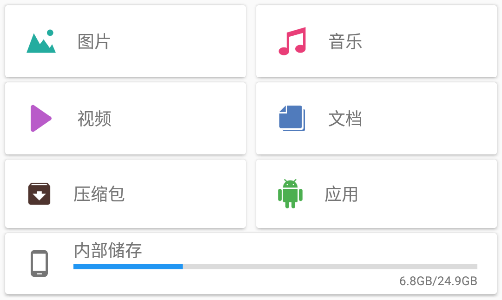
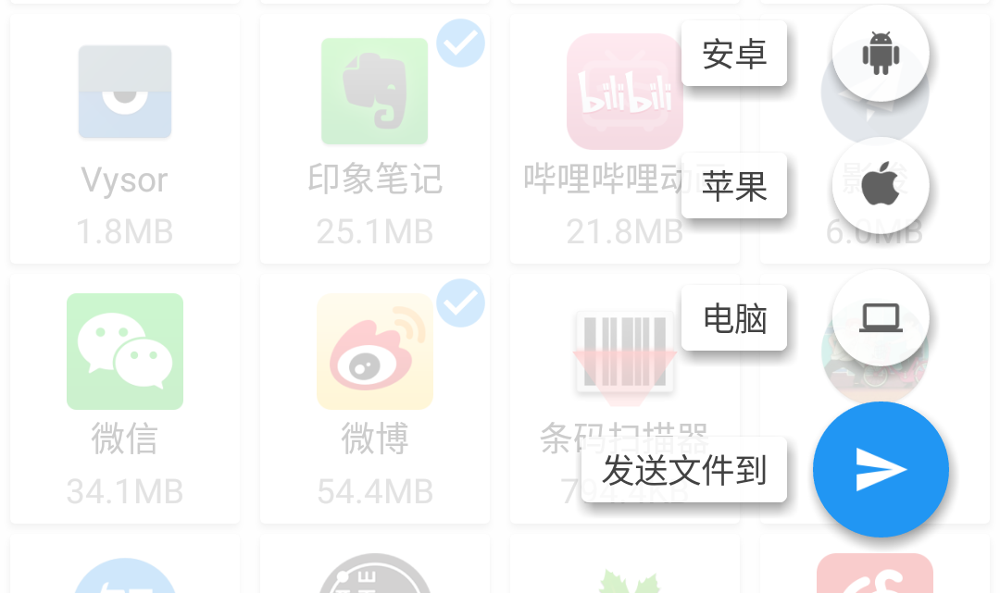
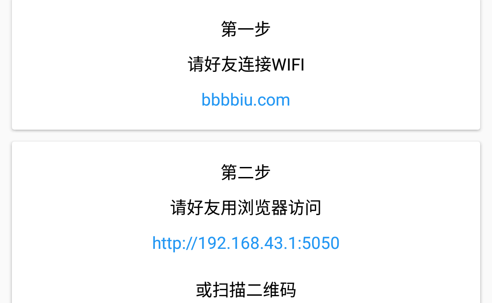
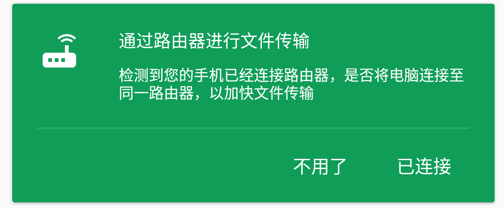
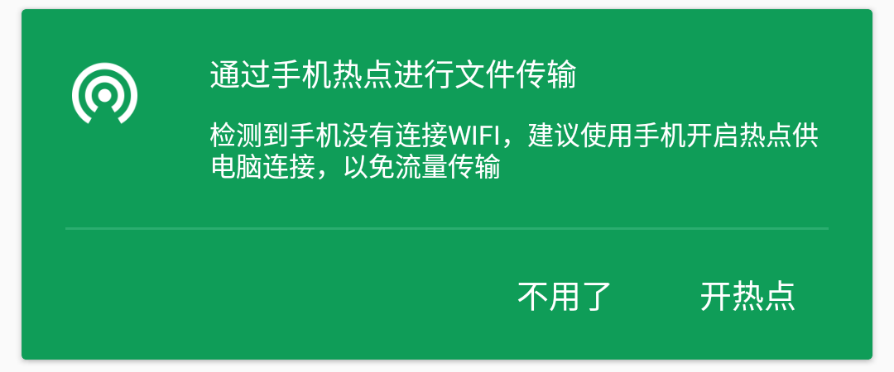

可以按文件分类进行选择也可以直接浏览所有文件。

选择文件之后，点击右下角的浮动按钮，选择接收方的设备。
应用会自动开启WIFI热点，等待接收方连接，并自动发送文件。

应用会开启名为bbbbiu.com的WIFI热点，接收方手动连接至该WIFI，然后通过浏览器访问下载页面即可。
发送给电脑时，有以下几种情况：

当应用检测到手机已经连接至路由器，会显示上面的提示框，选择已连接即可。

当应用检测到手机没有连接路由器，会显示上面的提示框，选择开热点即可。

使用电脑浏览器访问官网，然后用手机扫描二维码即可，此时文件传输需要使用互联网，可能会产生流量费用。

在主页面点击右下角的浮动按钮，并选择发送方的设备。连接发送方与接收方的方式与上述发送文件时相同。

点击主页面右上方的历史记录图标，即可查看传输历史，包括接收历史以及发送历史。同时，最近下载的文件也会显示在主页面上。
可以从历史记录中选择一些文件，分享给其他应用。也可以从其他应用选择文件，然后分享给本应用，进行文件传输。
在传输历史中选择要分享的文件之后，点击右上角的分享按钮，即可分享给其他应用。

在其他应用选好文件之后，点击分享按钮，在弹出的应用选择框中选择本应用，即可将选中的文件发送给好友。
另外，也可以在其他应用中选中文字并分享。会自动将选中的文字保存为文件，然后发送给接受者。
应用中，“苹果”设备可以适用于其他所有能连接WIFI的设备。